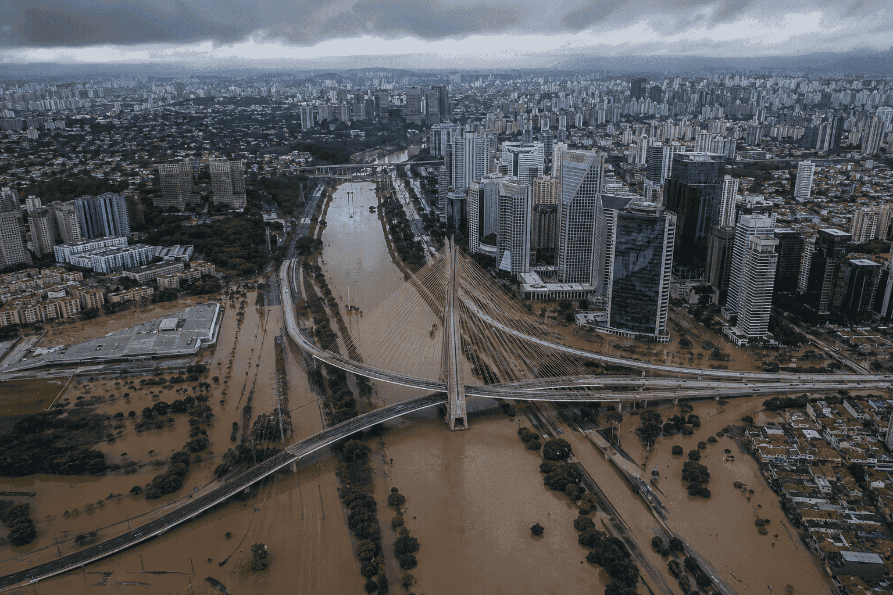
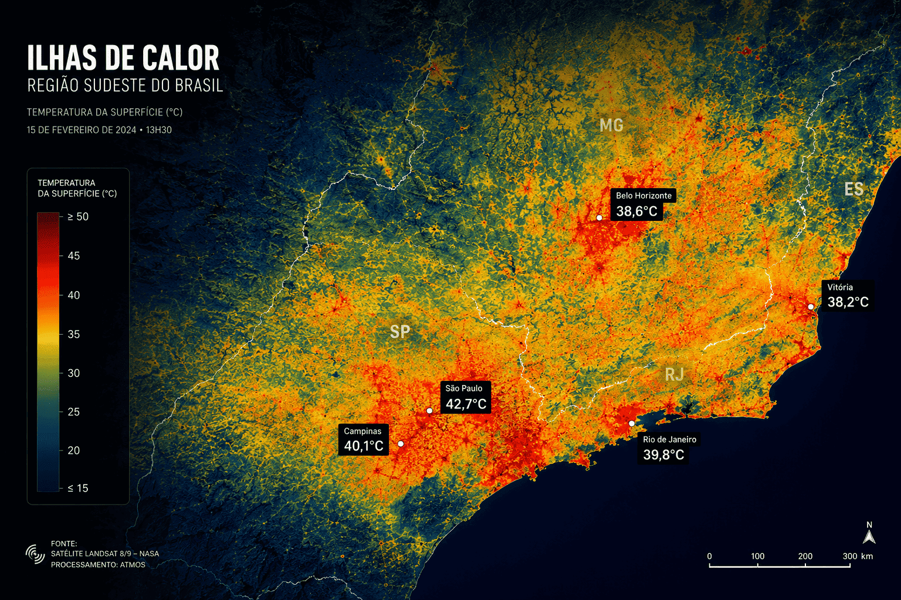
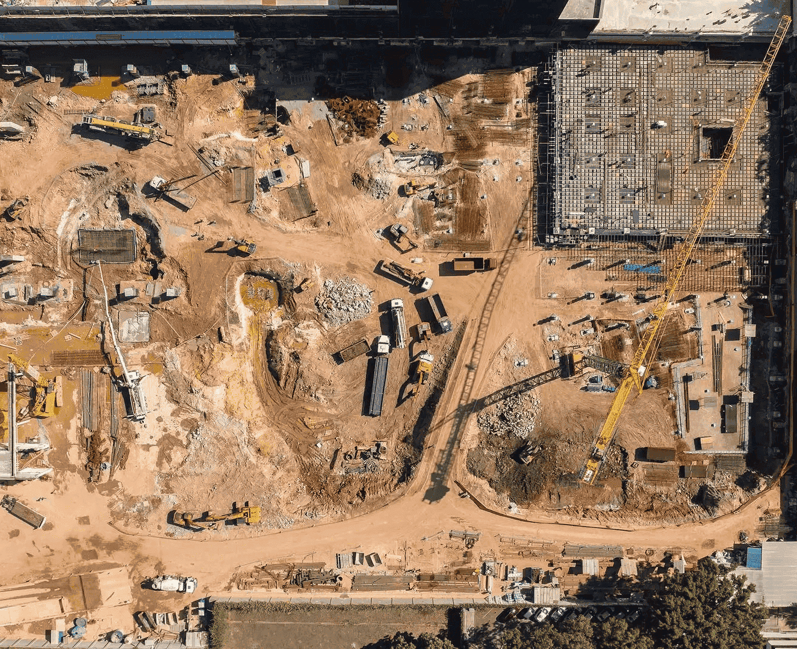

🛰️
Imageamento de Satélite
Imagens multiespectrais atualizadas a cada 6 horas cobrindo toda a área urbana com resolução de 1m².


Transformando dados orbitais, inteligência artificial e monitoramento urbano em prevenção, segurança e análise preditiva para o futuro das cidades.

Visualize riscos climáticos, deformações urbanas e comportamento da cidade através de mapas inteligentes, inteligência artificial e tecnologia espacial.

Monitoramento urbano em tempo real com dados de satélites, clima, sensores e IA avançada.
sobre a atmos
A Atmos nasceu da convicção de que dados espaciais podem salvar vidas no ambiente urbano. Combinamos imagens de satélite, sensores distribuídos e modelos de inteligência artificial para oferecer uma visão completa e em tempo real de qualquer cidade do Brasil. Nossa plataforma foi desenvolvida em parceria com institutos de pesquisa e testada em 12 cidades brasileiras, gerando insights que antes levavam dias em menos de 30 segundos.
cidades ativas
precisao
latência média
funcionalidades
Seis módulos integrados que transformam dados brutos em decisões estratégicas para gestores, engenheiros e pesquisadores urbanos.
🛰️
Imagens multiespectrais atualizadas a cada 6 horas cobrindo toda a área urbana com resolução de 1m².
🌦️
Dados de temperatura, umidade, precipitação e qualidade do ar integrados com modelos preditivos de 72 horas.
🧠
Modelos treinados com dados históricos de 10 anos que antecipam enchentes, calor extremo e falhas de infraestrutura.
🗺️
Camadas interativas sobreponíveis em tempo real: risco, tráfego, cobertura vegetal, densidade e muito mais.
🔔
Sistema de notificações por criticidade com integração direta a prefeituras, defesa civil e corpo de bombeiros.
📊
Painéis customizáveis e exportação de relatórios no formato de cada órgão. Dados prontos para decisão.
casos de uso

Monitoramento de bacias hidrográficas com alertas antecipados de até 48 horas antes de eventos críticos.

Mapeamento em escala de quarteirão para orientar políticas de arborização e resfriamento de cidades.

Detecção automática de mudanças no território urbano para fiscalização de obras e expansão irregular.
Agende uma demonstração personalizada ou tire dúvidas com nossos especialistas em monitoramento urbano.
Ir para contatos